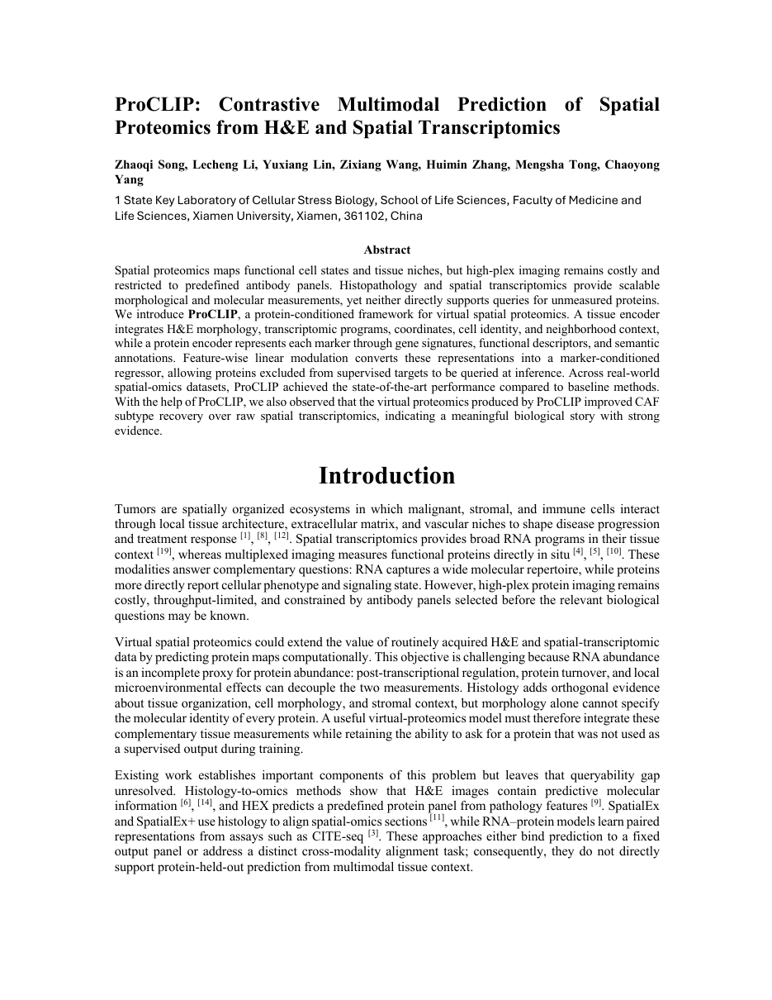

Searchable research paper · 2026
ProCLIP
Contrastive Multimodal Prediction of Spatial Proteomics from H&E and Spatial Transcriptomics
Zhaoqi Song, Lecheng Li, Yuxiang Lin, Zixiang Wang, Huimin Zhang, Mengsha Tong, and Chaoyong Yang

Original 11-page manuscript